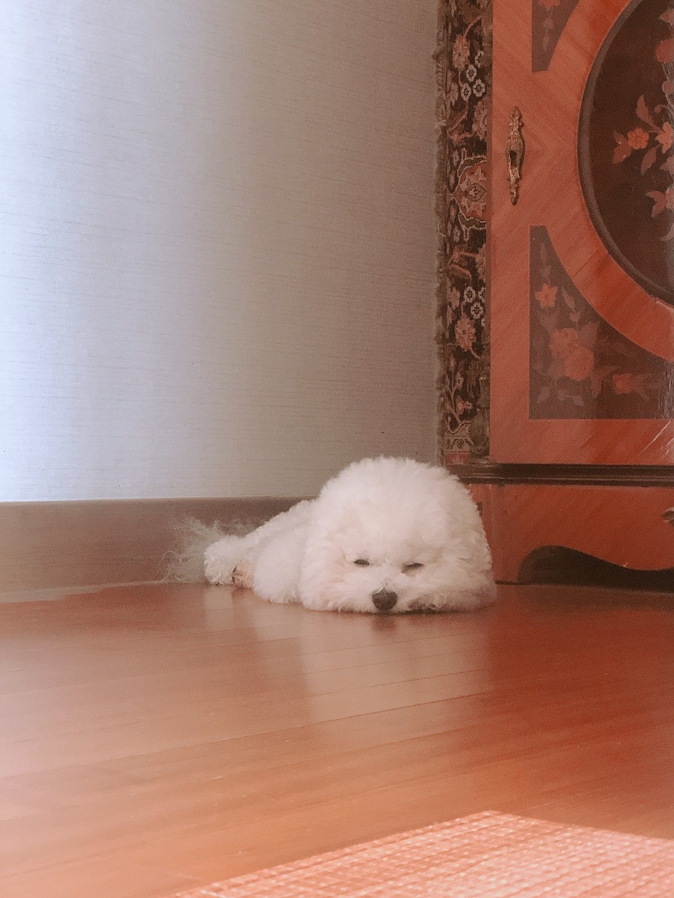

기획/디자인
한지희
안녕하세요~! 아기사자 10기 기획/디자인 파트 한지희입니다!저는 INTJ이긴 하지만 생각보다 더 감성적이고 친구 만나는 것도 좋아해요! (에너지가 부족하긴 하지만..) 그리고 I이지만 생각보다 낯을 많이 가리진 않는 것 같아요!!
2020 - ewha
2022 - 멋사 10기
2024 - 졸업예정
독서, 전시관람, 빵 (저는 빵을 정말 사랑합니다 ㅜ ㅎㅎ 건강빵, 케이크 등 가리지 않고 다 좋아해요!!), 커피, 강아지나 고양이를 굉장히 좋아합니다! (현재 비숑을 키우는 견주입니다!), 매운 음식 ><
운동, 음주...
현재는 UI/UX 디자이너와 브랜딩 사이에서 고민중입니다!! 올 한해는 멋사와 함께 UI/UX에 대해 많이 알아갔음 좋겠어요~~
